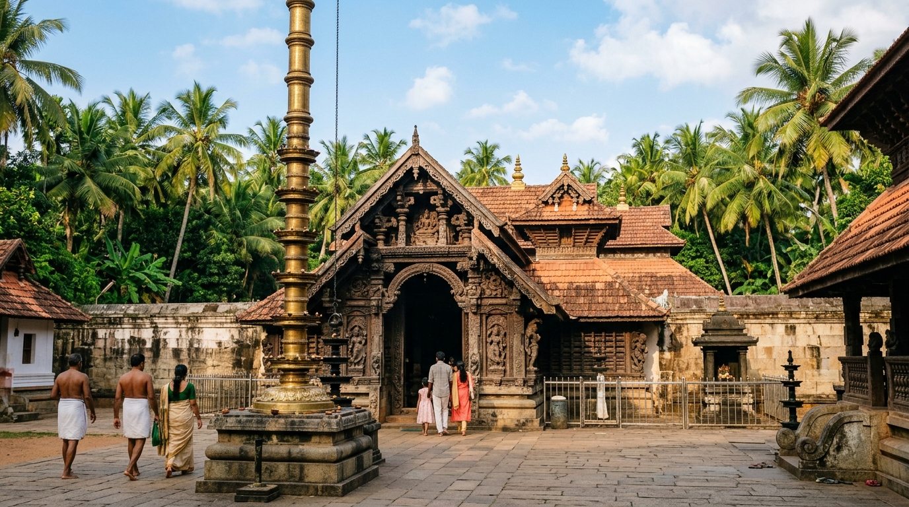
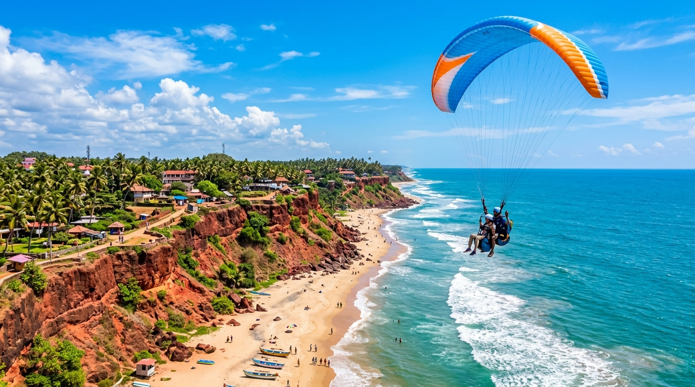
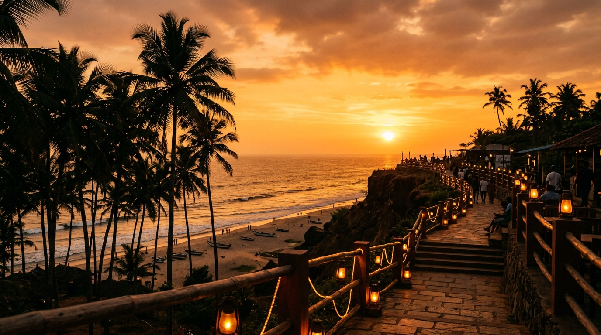

Varkala Beach
Kerala's Cliff-Backed Shoreline, Sacred Waters & Wellness Sanctuary
Nestled along the Malabar Coast of the Arabian Sea, Varkala Beach (also known as Papanasam Beach) is famous for its dramatic red laterite cliffs towering directly above golden sands. Combining ancient spiritual heritage, natural mineral springs, thrill-filled cliff paragliding, and holistic Ayurvedic wellness, Varkala stands as one of India's most extraordinary coastal wonders.
📍 Location & Geographical Information
Varkala Beach is located in Varkala Taluk of Thiruvananthapuram District in Southern Kerala, situated approximately 40 kilometers north of Thiruvananthapuram city and Trivandrum International Airport (TRV). It is positioned along the southwestern Malabar Coast of India, flanked by the Arabian Sea to the west and emerald backwater canals to the east.
| State & District | Kerala State, Thiruvananthapuram District (Varkala Taluk) |
|---|---|
| Geographical Coordinates | 8.7379° N, 76.7163° E |
| Geological Formation | Varkala Formation (Cenozoic sedimentary laterite cliffs with lignite beds) |
| Cliff Elevation | 15m – 30m vertical cliffs directly abutting the Arabian Sea |
| Proximity & Access | 3 km from Varkala Sivagiri Railway Station (VAK), 40 km from Trivandrum Airport (TRV) |
⛰️ Beach & Cliff Landscape
- Unique Red Laterite Cliffs: The only coastal location in Southern Kerala where Cenozoic laterite cliffs rise steeply adjacent to the Arabian Sea. Declared a Geo-heritage site by the Geological Survey of India (GSI).
- Papanasam Sacred Sands: Golden sand beach stretching beneath the cliffs. "Papanasam" translates to "destroyer of sins"—holy ocean waters where pilgrims perform cleansing immersion rituals.
- Natural Mineral Springs: Fresh groundwater springs cascade down the cliff faces, containing medicinal minerals believed to heal bodily ailments.
- Cliff-Top Promenade: The North Cliff and South Cliff paths are lined with wooden boardwalks, open-air seafood cafes, artisan shops, and yoga studios overlooking sunset panoramas.
🛕 Cultural & Local Highlights
- Janardanaswamy Temple: A revered 2,000-year-old shrine dedicated to Lord Vishnu, often referred to as "Dakshina Kashi" (the Benares of the South).
- Sivagiri Mutt: Sacred spiritual headquarters founded in 1904 by renowned saint and social reformer Sree Narayana Guru, advocating "One Caste, One Religion, One God for Man".
- Karkidaka Vavu Bali Ritual: Annual ancestral remembrance ceremonies where thousands of devotees gather at Papanasam Beach for ritual offerings and holy dips.
- Kerala Kathakali & Arts: Cultural centers along the cliff host evening Kathakali dance-drama performances and Kalaripayattu martial arts demonstrations.
🏄 Activities & Experience
- Cliffside Paragliding: Experience thrilling tandem paragliding flights soaring over the red cliffs and turquoise ocean waves.
- Surfing & Stand-Up Paddleboarding: Clean ocean swells off North Cliff provide prime conditions for beginner and intermediate surfers.
- Ayurvedic Healing & Spas: Authentic Panchakarma therapies, herbal steam baths, and holistic treatments offered by certified Kerala practitioners.
- Yoga & Meditation Retreats: Daily sunrise and sunset yoga workshops conducted on rooftop platforms overlooking the ocean.
🗺️ Nearby Attractions
- Kappil Beach & Lake (7 km North): Picturesque estuary where the tranquil Kappil backwater lake meets the crashing waves of the Arabian Sea.
- Anjengo (Anchuthengu) Fort & Lighthouse (12 km South): Historic 17th-century British East India Company fort offering panoramic coastal views.
- Ponnumthuruthu Island (Golden Island) (10 km East): Serene island in the backwaters featuring an ancient 100-year-old Shiva-Parvati temple.
- Edava Beach & Canal (4 km North): Uncrowded, pristine shoreline featuring serene backwater canal intersections.
🗺️ Map & Location Reference
Varkala's geography is uniquely defined by its two prominent cliff sectors—the bustling North Cliff (famous for dining, shopping, and paragliding takeoffs) and the quieter South Cliff (focused on serene wellness retreats and residential stays). Below the cliffs lies the sacred strand of Papanasam Beach.
Beaches of India Navigation Matrix
Explore premier coastal destinations across India's maritime states and review safety indicators.
Varkala Beach
Vibe: Red Laterite Cliffs, Temple, Mineral Springs, Surfing
Currently ViewingKovalam Beach
Vibe: Lighthouse Cove, Crescent Bay, Ayurvedic Spas
Safe for SwimmingBekal Fort Beach
Vibe: Coastal Fort, Keyhole Towers, Estuary Promenade
Fortified CoastAnjuna Beach
Vibe: Rocky Coast, Flea Market, Bohemian
Rocky ShorelineElephant Beach
Vibe: Coral Reefs, Snorkeling, Sea Walking
Supervised Water SportsVarkala Image Gallery & Attribution



